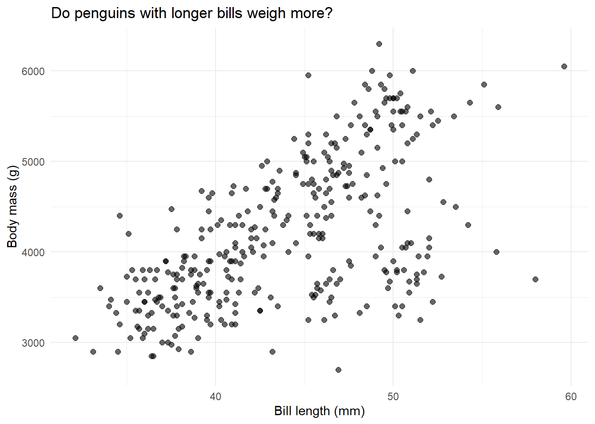
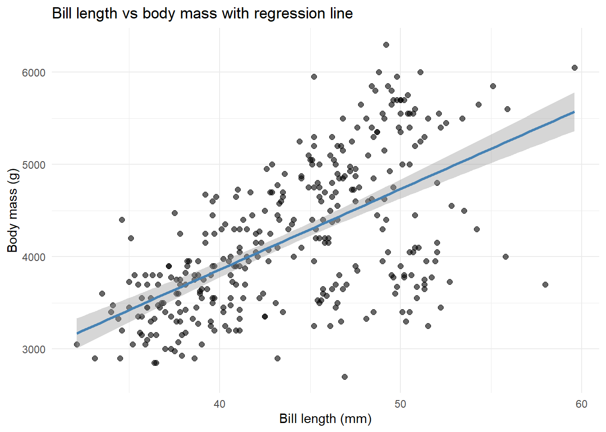
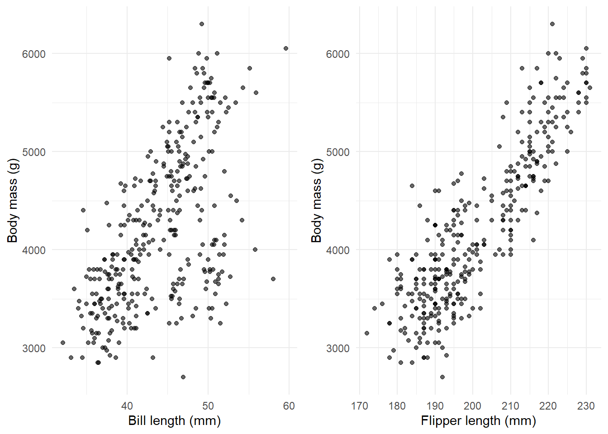
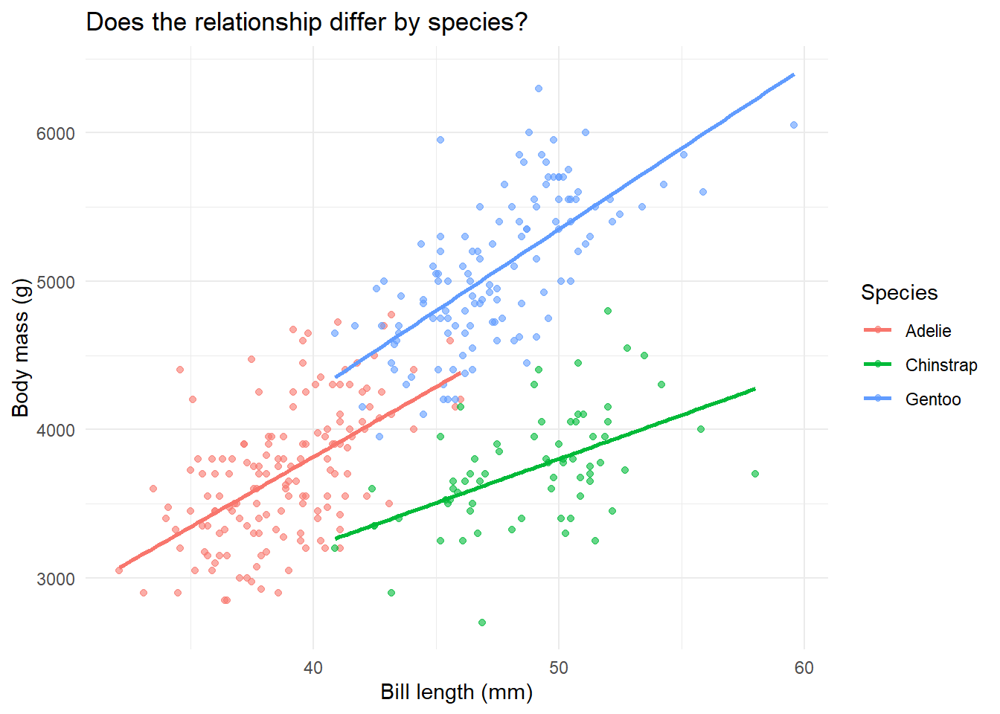

We’ll keep this simple. Just three essential packages:
library(ggplot2) # for pretty plotslibrary(dplyr) # for data wranglinglibrary(palmerpenguins) # our dataset# Load the data and remove rows with missing valuesdata(penguins)penguins <- penguins %>%filter(!is.na(bill_length_mm), !is.na(body_mass_g), !is.na(species),!is.na(flipper_length_mm))# Take a quick lookhead(penguins)
species
island
bill_length_mm
bill_depth_mm
flipper_length_mm
body_mass_g
sex
year
Adelie
Torgersen
39.1
18.7
181
3750
male
2007
Adelie
Torgersen
39.5
17.4
186
3800
female
2007
Adelie
Torgersen
40.3
18.0
195
3250
female
2007
Adelie
Torgersen
36.7
19.3
193
3450
female
2007
Adelie
Torgersen
39.3
20.6
190
3650
male
2007
Adelie
Torgersen
38.9
17.8
181
3625
female
2007
What we’re looking at: Data on 333 penguins from three species. We’ll use their physical measurements to understand regression.
Part 1: Simple Linear Regression
The Question: Does bill length predict body mass?
Let’s start with the most basic regression: one predictor, one outcome.
Step 1: Always plot your data first
Never fit a model before looking at your data. Seriously, never.
# Create a scatter plotggplot(penguins, aes(x = bill_length_mm, y = body_mass_g)) +geom_point(alpha =0.6, size =2) +labs(x ="Bill length (mm)",y ="Body mass (g)",title ="Do penguins with longer bills weigh more?" ) +theme_minimal()

What do we see? There’s definitely a positive relationship—longer bills tend to go with heavier penguins. But there’s a lot of scatter. Let’s quantify this relationship with regression.
Step 2: Fit the model
The lm() function fits a linear model. The formula y ~ x means “y is predicted by x”.
# Fit the regression: body mass predicted by bill lengthmodel1 <-lm(body_mass_g ~ bill_length_mm, data = penguins)# The model object is now stored in model1# Let's see what's insideclass(model1)
What just happened? We created a model object called model1. It’s a list containing everything R calculated: coefficients, residuals, fitted values, and more.
Step 3: Look at the output
# The summary() function shows us the key resultssummary(model1)
Call:
lm(formula = body_mass_g ~ bill_length_mm, data = penguins)
Residuals:
Min 1Q Median 3Q Max
-1762.08 -446.98 32.59 462.31 1636.86
Coefficients:
Estimate Std. Error t value Pr(>|t|)
(Intercept) 362.307 283.345 1.279 0.202
bill_length_mm 87.415 6.402 13.654 <2e-16 ***
---
Signif. codes: 0 '***' 0.001 '**' 0.01 '*' 0.05 '.' 0.1 ' ' 1
Residual standard error: 645.4 on 340 degrees of freedom
Multiple R-squared: 0.3542, Adjusted R-squared: 0.3523
F-statistic: 186.4 on 1 and 340 DF, p-value: < 2.2e-16
Let’s break this down:
Coefficients table: Shows our intercept and slope
Residual standard error: How far off our predictions typically are (645.43g)
R-squared: Proportion of variance explained (0.35 = 35%)
F-statistic: Tests if the model is better than just using the mean (it is!)
Step 4: Extract and interpret the coefficients
Instead of just reading the summary, let’s pull out the numbers we need:
# Get the coefficientscoefficients(model1)
(Intercept) bill_length_mm
362.30672 87.41528
# Or access them directly from the model objectmodel1$coefficients
(Intercept) bill_length_mm
362.30672 87.41528
What do these mean?
Intercept = 362.31: A penguin with 0mm bill length would weigh 362.31g. (Obviously impossible—this is just where the line crosses the y-axis)
Slope = 87.42: For every 1mm increase in bill length, body mass increases by 87.42 grams on average
Let’s get confidence intervals too:
# 95% confidence intervals for our coefficientsci1 <-confint(model1)ci1
We’re 95% confident the true slope is between 74.82 and 100.01 grams per mm.
Step 5: Get R-squared
How much of the variation in body mass does bill length explain?
# Extract R-squared from the summaryr2_model1 <-summary(model1)$r.squaredr2_model1
[1] 0.3541557
# For adjusted R-squaredsummary(model1)$adj.r.squared
[1] 0.3522562
35% explained. That means bill length accounts for about a third of why some penguins are heavier than others. Not bad, but there’s clearly more to the story.
Step 6: Add the regression line to our plot
ggplot(penguins, aes(x = bill_length_mm, y = body_mass_g)) +geom_point(alpha =0.6, size =2) +geom_smooth(method ="lm", se =TRUE, color ="steelblue") +labs(x ="Bill length (mm)",y ="Body mass (g)",title ="Bill length vs body mass with regression line" ) +theme_minimal()

The shaded area shows our uncertainty about where the true line is.
Step 7: Understand predictions and residuals
Let’s manually see what the model predicts:
# Get fitted (predicted) values for each penguinfitted_values <-fitted(model1)# Get residuals (observed - predicted)residuals_values <-residuals(model1)# Look at first 10 penguinsdata.frame(observed = penguins$body_mass_g[1:10],predicted = fitted_values[1:10],residual = residuals_values[1:10])
observed
predicted
residual
3750
3780.244
-30.24405
3800
3815.210
-15.21017
3250
3885.142
-635.14239
3450
3570.447
-120.44739
3650
3797.727
-147.72711
3625
3762.761
-137.76100
4675
3788.986
886.01442
3475
3343.168
131.83233
4250
4033.748
216.25164
3300
3666.604
-366.60419
What’s a residual? It’s how wrong we were. If a penguin weighs 3750g but we predicted 3600g, the residual is +150g. Positive residuals mean we underestimated; negative means we overestimated.
Part 2: Multiple Regression
The Question: Does adding flipper length improve our predictions?
We saw that bill length explains 35% of body mass variation. Can we do better by adding another predictor?
Step 1: Visualize both predictors
# Create two plots side by sidelibrary(gridExtra)p1 <-ggplot(penguins, aes(x = bill_length_mm, y = body_mass_g)) +geom_point(alpha =0.6) +labs(x ="Bill length (mm)", y ="Body mass (g)") +theme_minimal()p2 <-ggplot(penguins, aes(x = flipper_length_mm, y = body_mass_g)) +geom_point(alpha =0.6) +labs(x ="Flipper length (mm)", y ="Body mass (g)") +theme_minimal()grid.arrange(p1, p2, ncol =2)

Both show positive relationships. Now let’s include both in one model.
Step 2: Fit the multiple regression
The + sign means “include both predictors”:
# Fit model with two predictorsmodel2 <-lm(body_mass_g ~ bill_length_mm + flipper_length_mm, data = penguins)summary(model2)
Call:
lm(formula = body_mass_g ~ bill_length_mm + flipper_length_mm,
data = penguins)
Residuals:
Min 1Q Median 3Q Max
-1090.5 -285.7 -32.1 244.2 1287.5
Coefficients:
Estimate Std. Error t value Pr(>|t|)
(Intercept) -5736.897 307.959 -18.629 <2e-16 ***
bill_length_mm 6.047 5.180 1.168 0.244
flipper_length_mm 48.145 2.011 23.939 <2e-16 ***
---
Signif. codes: 0 '***' 0.001 '**' 0.01 '*' 0.05 '.' 0.1 ' ' 1
Residual standard error: 394.1 on 339 degrees of freedom
Multiple R-squared: 0.76, Adjusted R-squared: 0.7585
F-statistic: 536.6 on 2 and 339 DF, p-value: < 2.2e-16
Step 3: Interpret the coefficients carefully
This is where multiple regression gets interesting:
bill_length_mm = 6.05: Holding flipper length constant, a 1mm increase in bill length increases body mass by 6.05g
flipper_length_mm = 48.14: Holding bill length constant, a 1mm increase in flipper length increases body mass by 48.14g
Wait, what happened? The bill length effect dropped from 87.42g to 6.05g! Why? Because bill length and flipper length are correlated—they both measure “penguin size”. Once we account for flipper length, bill length doesn’t add as much.
Step 4: Compare model fit
Did adding flipper length help?
# Model 1 R-squaredr2_model1
[1] 0.3541557
# Model 2 R-squared r2_model2 <-summary(model2)$r.squaredr2_model2
[1] 0.7599577
Huge improvement! We went from 35% to 76% variance explained. Flipper length is clearly an important predictor.
Step 5: Formal model comparison
We can test if model2 is significantly better than model1:
Reading the output: The p-value is tiny (< 0.001), confirming that adding flipper length significantly improves the model.
Part 3: Interactions
The Question: Does the bill-length effect differ by species?
Maybe the relationship between bill length and body mass isn’t the same for all three species.
Step 1: Plot by species
ggplot(penguins, aes(x = bill_length_mm, y = body_mass_g, color = species)) +geom_point(alpha =0.6) +geom_smooth(method ="lm", se =FALSE) +labs(x ="Bill length (mm)",y ="Body mass (g)",title ="Does the relationship differ by species?",color ="Species" ) +theme_minimal()

What do we see? Three different regression lines with different slopes. Adelie (pink) has a gentler slope than Gentoo (green). This suggests an interaction.
Step 2: Fit the interaction model
The * symbol means “include both main effects AND their interaction”:
# Main effects + interactionmodel3 <-lm(body_mass_g ~ bill_length_mm * species, data = penguins)summary(model3)
Call:
lm(formula = body_mass_g ~ bill_length_mm * species, data = penguins)
Residuals:
Min 1Q Median 3Q Max
-918.76 -245.89 -8.65 238.44 1126.27
Coefficients:
Estimate Std. Error t value Pr(>|t|)
(Intercept) 34.88 443.18 0.079 0.937
bill_length_mm 94.50 11.40 8.291 2.73e-15 ***
speciesChinstrap 811.26 799.81 1.014 0.311
speciesGentoo -158.71 683.19 -0.232 0.816
bill_length_mm:speciesChinstrap -35.38 17.75 -1.994 0.047 *
bill_length_mm:speciesGentoo 14.96 15.79 0.948 0.344
---
Signif. codes: 0 '***' 0.001 '**' 0.01 '*' 0.05 '.' 0.1 ' ' 1
Residual standard error: 371.8 on 336 degrees of freedom
Multiple R-squared: 0.7882, Adjusted R-squared: 0.7851
F-statistic: 250.1 on 5 and 336 DF, p-value: < 2.2e-16
Step 3: Interpret interaction coefficients
This is the trickiest part of regression. Let’s go slowly:
# Model without interactionmodel3_simple <-lm(body_mass_g ~ bill_length_mm + species, data = penguins)# Compareanova_comparison <-anova(model3_simple, model3)anova_comparison
Res.Df
RSS
Df
Sum of Sq
F
Pr(>F)
338
47613707
NA
NA
NA
NA
336
46447006
2
1166702
4.21999
0.0154854
The p-value is 0.015. Since this is less than 0.05, the interaction is statistically significant. The slopes really do differ across species. We should keep the interaction in the model!
Part 4: ANOVA is Just Regression
The Big Reveal: ANOVA = Regression with categorical predictors
This blows people’s minds every time. Let’s prove it.
Traditional ANOVA approach
Do the three species have different average body masses?
# Fit ANOVAaov_model <-aov(body_mass_g ~ species, data = penguins)aov_summary <-summary(aov_model)aov_summary
Df Sum Sq Mean Sq F value Pr(>F)
species 2 146864214 73432107 343.6 <2e-16 ***
Residuals 339 72443483 213698
---
Signif. codes: 0 '***' 0.001 '**' 0.01 '*' 0.05 '.' 0.1 ' ' 1
ANOVA says: F = 343.63, p < 0.001. Species significantly affect body mass.
Regression approach
Now let’s use lm() with a categorical predictor:
# Fit regression with species as predictorlm_model <-lm(body_mass_g ~ species, data = penguins)lm_summary <-summary(lm_model)lm_summary
Call:
lm(formula = body_mass_g ~ species, data = penguins)
Residuals:
Min 1Q Median 3Q Max
-1126.02 -333.09 -33.09 316.91 1223.98
Coefficients:
Estimate Std. Error t value Pr(>|t|)
(Intercept) 3700.66 37.62 98.37 <2e-16 ***
speciesChinstrap 32.43 67.51 0.48 0.631
speciesGentoo 1375.35 56.15 24.50 <2e-16 ***
---
Signif. codes: 0 '***' 0.001 '**' 0.01 '*' 0.05 '.' 0.1 ' ' 1
Residual standard error: 462.3 on 339 degrees of freedom
Multiple R-squared: 0.6697, Adjusted R-squared: 0.6677
F-statistic: 343.6 on 2 and 339 DF, p-value: < 2.2e-16
Notice the bottom line: F-statistic: 343.63, p < 0.001
They’re identical!
# Get ANOVA table from the lm modelanova(lm_model)
Df
Sum Sq
Mean Sq
F value
Pr(>F)
species
2
146864214
73432107.1
343.6263
0
Residuals
339
72443483
213697.6
NA
NA
Same F-statistic, same p-value, same conclusion. ANOVA is just regression where the predictor is categorical instead of continuous.
Residuals vs Fitted: You can see some pattern/grouping—we’re missing an important predictor (species)
Q-Q plot: Tails deviate more from the line
This shows why model2 (which includes flipper length) is better
Summary: The Essential R Commands
Here’s everything you need to know:
# Fit a modelmodel <-lm(y ~ x, data = mydata) # simple regressionmodel <-lm(y ~ x1 + x2, data = mydata) # multiple regressionmodel <-lm(y ~ x1 * x2, data = mydata) # with interaction# Look at resultssummary(model) # full outputcoefficients(model) # just the coefficientsconfint(model) # confidence intervalsanova(model) # ANOVA table# Extract componentsmodel$coefficients # coefficientsfitted(model) # predicted valuesresiduals(model) # residualssummary(model)$r.squared # R-squared# Compare modelsanova(model1, model2) # test if model2 is better# Diagnosticsplot(model) # creates 4 diagnostic plots
Practice Exercises
Try these yourself:
Fit a simple regression predicting body_mass_g from flipper_length_mm. What’s the slope? Interpret it in plain English.
Add bill_length_mm to create a multiple regression. How did the flipper length coefficient change?
Fit separate regressions for each species (use filter()). Do Adelie, Chinstrap, and Gentoo have different slopes?
Use lm() to test if body mass differs between male and female penguins. Then verify your answer using t.test().
Check the diagnostics for your models. Do any assumptions look violated?
What You’ve Learned
How to fit linear models with lm()
How to extract and interpret coefficients
The difference between simple and multiple regression
What interactions mean and how to test them
That ANOVA is secretly just regression
How to check if your model assumptions are met
Most importantly: You learned to interrogate model objects directly using base R, not relying on fancy packages. This is how you really understand what’s going on under the hood.